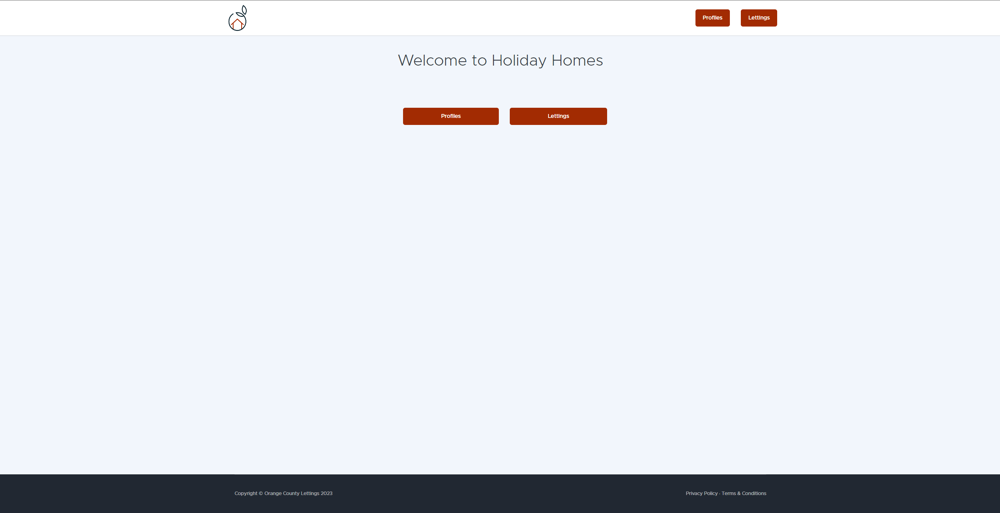
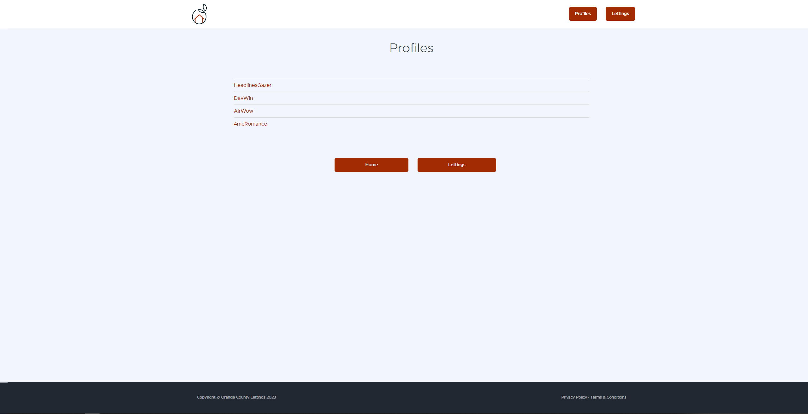
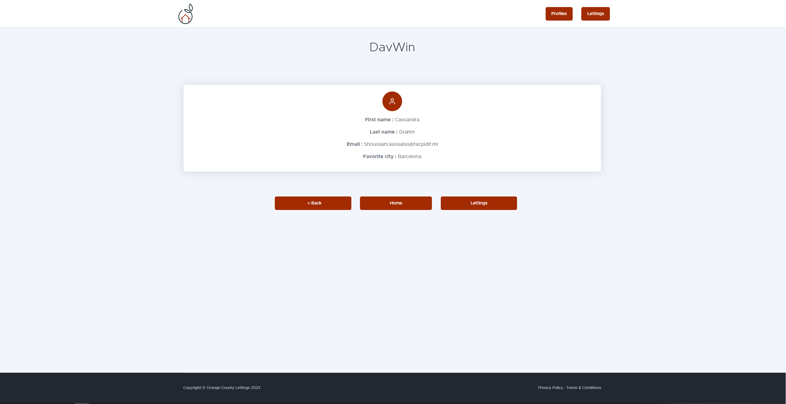
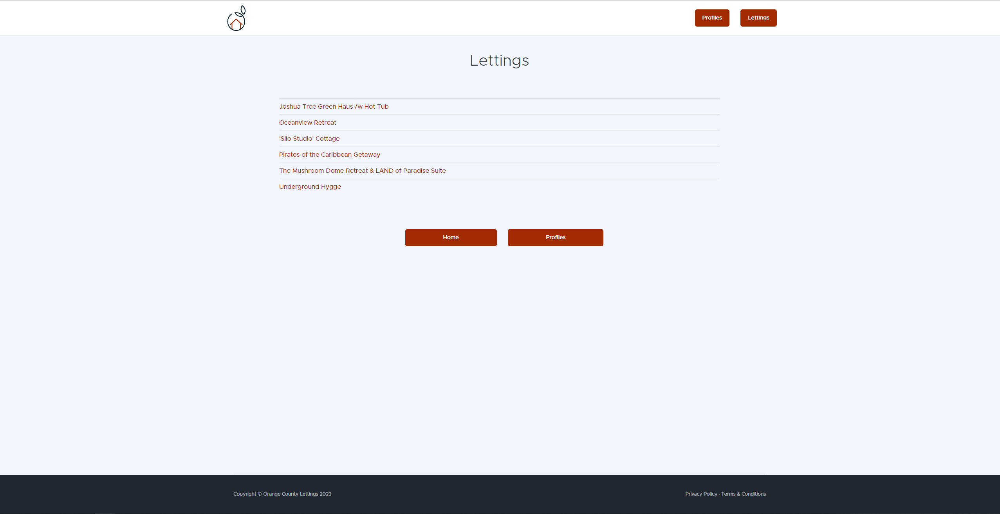
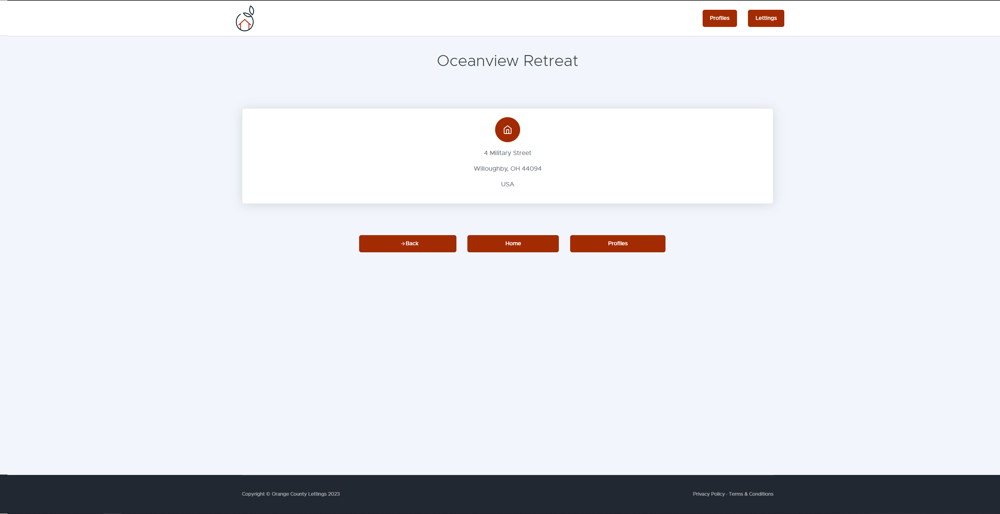

Guide Utilisateur
Ce guide utilisateur explique comment naviguer et utiliser les fonctionnalités de base de l’application. Les captures d’écran illustrent chaque étape.
Page d’accueil
La page d’accueil vous accueille et vous permet de naviguer vers les différentes sections de l’application.
Index des Profils
La page d’index des profils liste tous les profils utilisateurs disponibles. Vous pouvez cliquer sur un profil pour voir plus de détails.
Page de Profil
Sur la page de profil, vous pouvez voir les informations détaillées d’un utilisateur, comme son nom d’utilisateur et sa ville préférée.
Index des Locations
La page d’index des locations liste toutes les annonces de location disponibles. Vous pouvez cliquer sur une annonce pour voir plus de détails.
Page de Location
Sur la page de location, vous pouvez voir les informations détaillées d’une annonce de location, comme le titre et l’adresse du bien.
Conclusion
Ce guide utilisateur vous aide à naviguer et utiliser les principales fonctionnalités de l’application. Pour toute question ou problème, veuillez contacter le support technique.